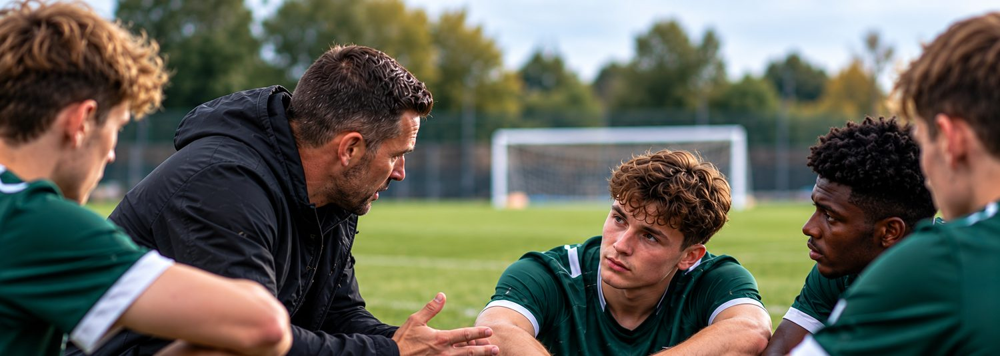
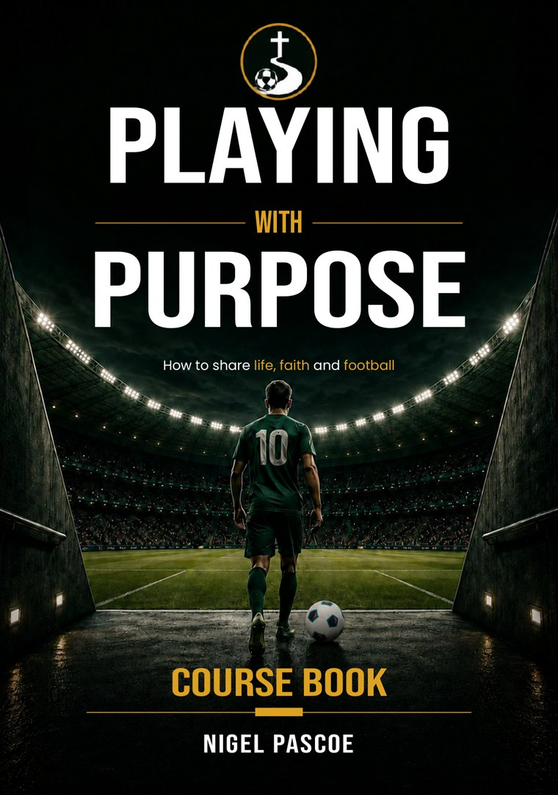

A 12-session Christian course by Nigel Pascoe
Playing with Purpose
For the game you love.
For the life you’re living.
01The course
Explore life, faith and football through twelve practical sessions that help players discover who they are in Christ and what that means on and off the pitch.
The biggest questions aren’t always answered on the pitch.
Football brings people together. It also brings pressure, uncertainty and questions that can be difficult to put into words. Playing with Purpose creates space to explore them together, through the Bible, honest conversation and practical steps for everyday life.
- Who am I beyond football?
- What gives my life purpose?
- How do I handle pressure, success and setbacks?
- What will my legacy be?

02Who it’s for
Bring the conversation to your team.
For coaches, chaplains and leaders who want to help players connect their faith with the realities of football and life. Use the book to open meaningful conversations with the people you already gather, support and encourage.
Players and teams
Twelve conversations about identity, purpose and faith, worked through together.
Coaches and team leaders
Questions, Scripture and challenges, with leader’s tips to guide honest discussion.
Chaplains
Material for time set aside midweek, beyond the matchday routine.
Church and youth groups
Where football is already part of your group’s life, a focused way to explore faith through it.
03The sessions
Twelve sessions. Questions that stay with you.
Each session takes one part of a footballer’s life and explores it through Scripture, Biblical characters, honest discussion and practical challenges.
-
Session 1: identity More than a footballer
Shirt numbers, positions and form all change. This opening session helps players see that their identity is found in being God’s child, not in their last game, their stats or what other people say about them.
- In the Bible
- David, Jeremiah and Peter
- Key verse
- Ephesians 2:10
Big idea You are more than a footballer – you are God’s child with a purpose.
-
Session 2: purpose Playing for something bigger
Why did you first start playing? Players look at football as a gift from God and wrestle with a bigger question: why has God given me this gift?
- In the Bible
- David, Paul and Esther
- Key verse
- John 10:10
Big idea When you know your purpose, you play with focus, passion and eternal perspective.
-
Session 3: pressure Standing firm under pressure
Fighting for a place, recovering from injury, taking a decisive penalty, living up to expectations. Players talk honestly about pressure and discover how God’s presence and truth bring strength and peace.
- In the Bible
- David, Peter and Daniel
- Key verse
- Isaiah 41:10
Big idea Pressure may reveal your character, but it does not define your identity.
-
Session 4: discipline Daily habits that shape your future
Growth requires training, and spiritual growth requires spiritual discipline. Players consider the small, faithful habits that shape life on and off the pitch.
- In the Bible
- Daniel, Joseph, Paul and Jesus
- Key verse
- 1 Timothy 4:7
Big idea Discipline today creates the strength, character and consistency of tomorrow.
-
Session 5: teamwork Stronger together
What makes a great team, and why can talented teams still fail? Players explore unity, humility and serving others, and how to support and encourage the people around them.
- In the Bible
- Moses and Aaron, David and his men, Paul and his companions
- Key verse
- Ecclesiastes 4:9
Big idea We are better together – playing for something bigger than ourselves.
-
Session 6: character Becoming the person God created you to be
Character is revealed not just in the highs, but in everyday choices. Players look at courage, integrity and faithfulness, and at who they are when no one is watching.
- In the Bible
- David, Joseph and Daniel
- Key verse
- Matthew 5:16
Big idea True character is about who you are when no one is watching.
-
Session 7: setbacks When life doesn’t go to plan
A poor performance, an injury, being left out of the team. Players reflect honestly on setbacks and see how God can use even the hardest seasons to shape character and deepen trust.
- In the Bible
- Joseph
- Key verse
- 2 Corinthians 4:8–9
Big idea Setbacks can build resilience, deepen trust in God and prepare you for what’s next.
-
Session 8: success Staying grounded when things go well
Is success winning, trophies and recognition, or something more? Players explore success as faithfulness: using their gifts well and making a lasting, positive difference to others.
- In the Bible
- Daniel
- Key verse
- Colossians 3:23
Big idea Success in God’s eyes is not just about what you achieve, but who you become.
-
Session 9: influence Leading by example
Every player has influence: in the team, at the club, at home and online. Players consider how their words, actions and example can point others to God.
- In the Bible
- Daniel
- Key verse
- Matthew 5:16
Big idea You can make a difference for God wherever you are – in the dressing room, on the pitch and in everyday life.
-
Session 10: relationships Loving God and loving others
The people around us shape us. Players explore what makes a good teammate and friend, and how to build relationships that honour God and reflect His love.
- In the Bible
- David and Jonathan
- Key verse
- Proverbs 17:17
Big idea God uses our relationships to shape us, support us and give us opportunities to make a positive difference for His Kingdom.
-
Session 11: transitions Navigating new seasons
Moving clubs, recovering from injury, fighting for a place, thinking about life after football. Players learn to trust the God who never changes through every new season.
- In the Bible
- Joseph
- Key verse
- Hebrews 13:8
Big idea Football seasons come and go, but God is constant.
-
Session 12: legacy Finishing well
Football celebrates goals, trophies and records, but what lasts? The final session helps players think beyond their playing days and live now in a way that points people to Jesus.
- In the Bible
- Joshua and Paul
- Key verse
- Matthew 25:23
Big idea Your career will have an ending. Your influence doesn’t have to.
04A taste of the conversation
“If football was taken away from you tomorrow, who would you be?”
05The course book
A practical companion for conversations that matter.

Biblical teaching, football examples, discussion questions and practical challenges, brought together in one course book. A resource to return to as players explore identity, purpose and faith together.
Read. Talk. Reflect. Put it into practice.
Every session follows the same nine-page rhythm, in the same order, with leader’s tips throughout.
- opening discussion
- biblical truth
- football example
- biblical characters
- action plan
- matchday mindset
- weekly challenge
- notes and reflections


06Written by
Nigel Pascoe
Pastoral coach, speaker and writer · Guernsey, Channel Islands
Nigel has a passion for helping people explore identity, purpose and faith. For many years he has walked alongside people through life’s opportunities, pressures and transitions, and he is the founder of the football charity Goal50, which supports township communities in Cape Town, South Africa. Playing with Purpose brings that passion into the shared language of football.
More about Nigel“It is about discovering a foundation that remains steady regardless of results, form, selection, injury or circumstance.”
Start a conversation that goes beyond the game.
Thinking about using Playing with Purpose with your team, players or youth group? Tell Nigel a little about your group and what you have in mind.